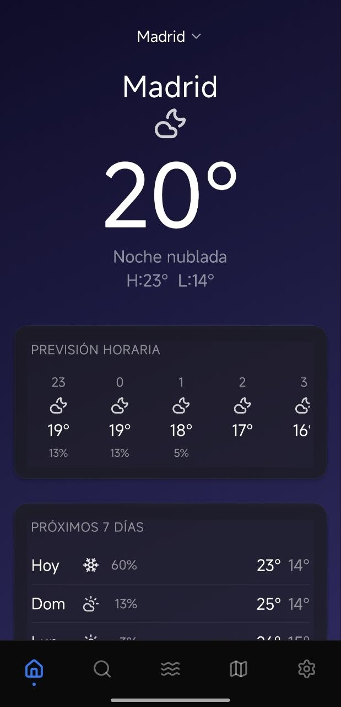
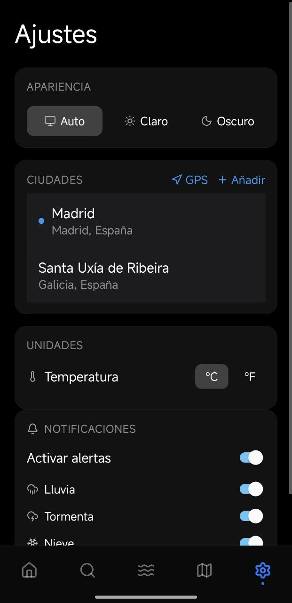
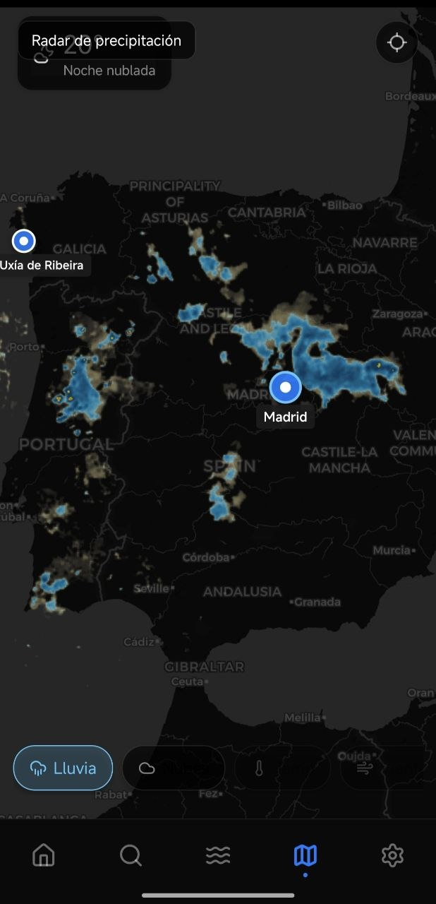
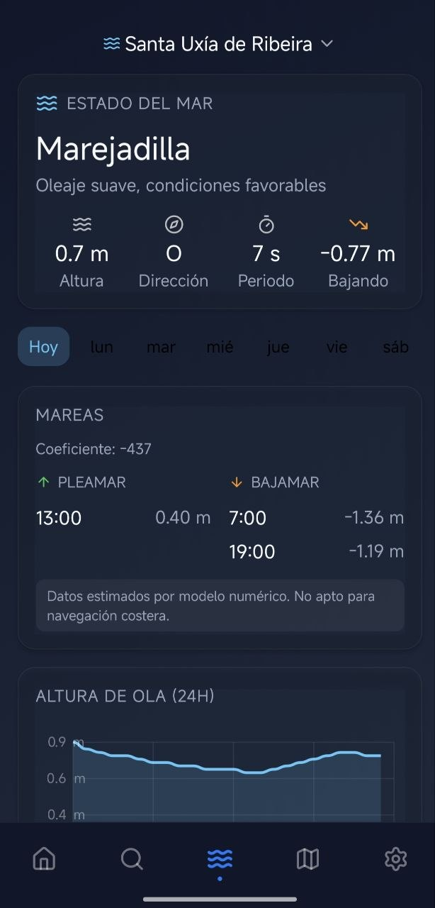
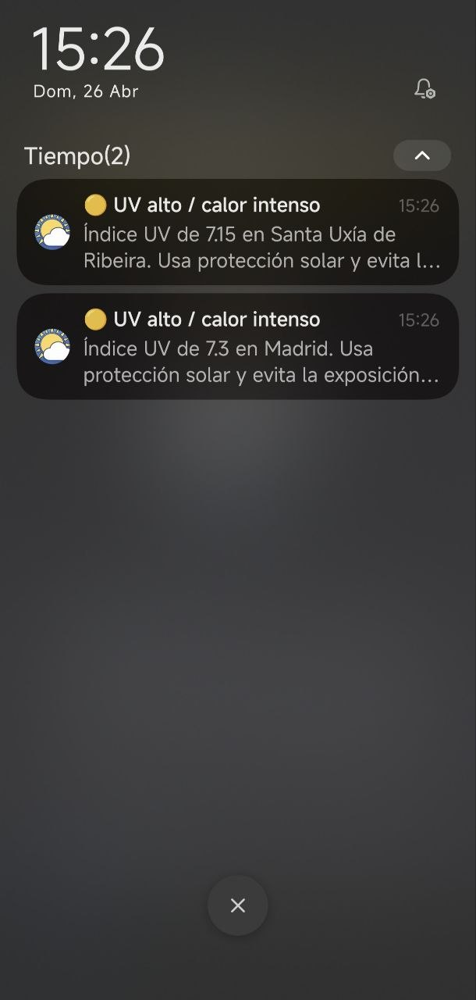

✨ Nueva versión 2.5, ya disponible
El clima nunca se vio tan bien.
Una experiencia meteorológica refinada. Datos precisos de AEMET envueltos en una interfaz diseñada para deleitar tus ojos.






Diseño que respira
No es solo una app del tiempo, es tu ventana al exterior.
Gradients Vivos
Fondos que cambian con la hora del día y la humedad.
Mareas Skia
Visualización fluida de las costas gallegas y españolas.
Motor MMKV
Velocidad instantánea. Sin esperas, sin lag.
Multi-Source API
Precisión extrema combinando OpenWeatherMaps y AEMET.
Alertas Meteorológicas
Notificaciones push en tiempo real para tormentas, avisos y fenómenos adversos.
Índice de Polen
Niveles diarios de polen por especie, ideales para personas con alergias.